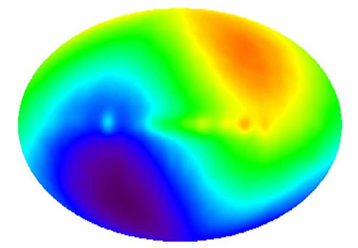

N.B. Rather confusingly, red (hot) areas correspond to blue-shifted radiation, while blue (cool) areas correspond to red-shifted radiation.
Credit: DMR, COBE, NASA, Four-Year Sky Map
In 1965, it was discovered that the Universe is permeated by microwave radiation left over from the period of recombination (which occured about 300,000 years after after the Big Bang). This radiation, now called the Cosmic Microwave Background or CMB, has an extremely uniform temperature of 2.725 Kelvin if one accounts for the smooth gradient in its temperature (from 0.0035 Kelvin below average in the direction of the constellation Aquarius, to 0.0035 Kelvin above average in the direction of the constellation Leo) across the sky. It was quickly realised that this dipole was the result of our Galaxy moving at 600 km/sec with respect to the CMB radiation, and it is now known that this reflects the motion of the Local Group of galaxies towards the Great Attractor.
Once the cosmic microwave background dipole is removed, the variation in the temperature of the CMB is astonishingly uniform with variations of only one part in ten thousand.